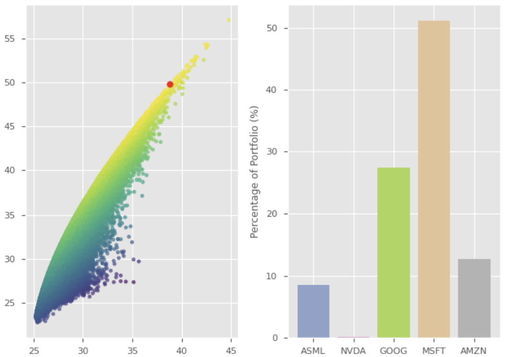

Law Wai Lok
First Year BSc Finance @ LSE
Hi! I'm Isaac, a first year BSc Finance student studying at The London School of Economics.
I've always enjoyed understanding how things worked, whether that is scientific phenomena, behaviourial relationships, or the stock market. Now, studying Finance at LSE, this curiosity has developed into a passion for analysing macroeconomic trends, investigating how economies and markets function, and using models / technology to simulate them.
I like all forms of problem-solving and discussion, so if you have a project or opportunity, feel free to reach out!
Projects

Forecasting Volatility
Our team evaluated the effectiveness of machine learning models (LSTM) in forecasting the volatility of a stock, comparing it to traditional stochastic methods (EWMA, GARCH).
Monte Carlo Simulation
Through Monte Carlo simulations, this project aims to investigate the optimal weights for each stock in a portfolio, calculated via the Sharpe Ratio.

Inka
The unofficial complement to the flashcards app "Anki", Inka generates worksheets for studying, and creates question "decks".
Publications
Personal Finance - An Introduction for Students and Young Adults
A book written when I was 14, introducing basic personal finance concepts and stock valuation. Initially targetted to my friends and classmates, it has reached an international audience, and has been recommended to young adults across the world.
CoWisdom Editions 4-6
Co-Wisdom is an international magazine based in Australia dedicated to celebrating and appreciating work-life balance. Advocating for the importance of primary healthcare, I contributed articles raising awareness for different health issues (including physical and mental illnesses), providing readers with information about the origins, risk factors and treatments of the disease. This magazine targets both the senior community and young people, and pertaining to the diversity of our readers, the articles I wrote are available in both English and Chinese.
United Magazine Editions 9-11
United Magazine is my secondary school's annual bilingual and student-led magazine. Apart from providing a medium for students to freely express them through literature and art, it celebrated the school's English and Chinese cultural heritage. As a regular contributor (and because I cannot draw 😁), I wrote multiple literary articles. Subsequently, I took on the role of being the Head of Chinese articles, supervising the editing of future works.
VOiCE Editions 21-22
Similarly, VOiCE is another literary magazine from my secondary school, published since 2002. Apart from contributing articles, I want to highlight my musical composition, "Nocturne in G Minor", which was selected to be on the 21st edition of the digital magazine "Escapism".